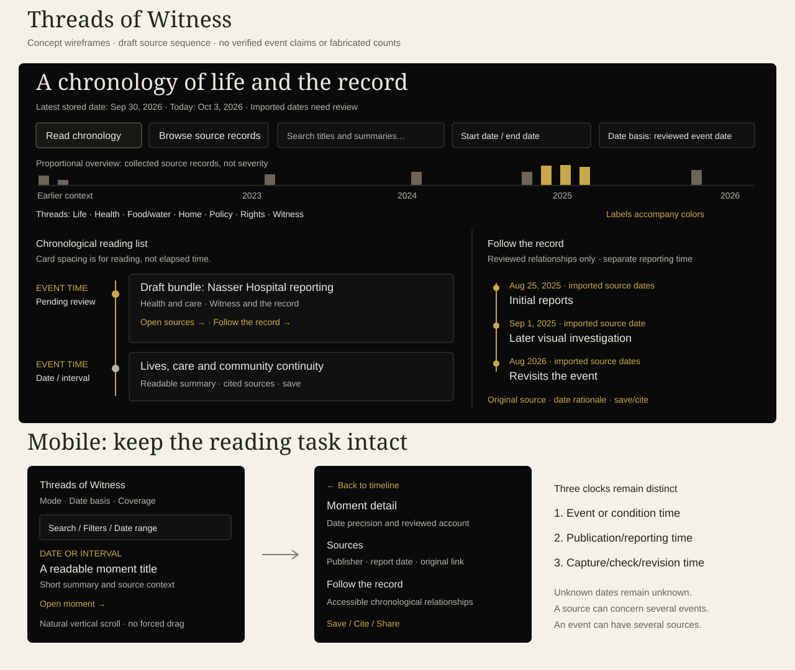

Threads of Witness
Research and design brief for an Echoes of Gaza archival timeline
Prepared October 3, 2026 • Collection snapshot: 1,352 stored records • Comparative register: 100 timeline projects
Recommendation: Build a readable chronological archive with selectable thematic threads and a distinctive Follow the record view. Readers should be able to understand a moment, see its sources, and trace how later reporting and investigations return to it. The design should preserve human lives and the changing documentary record together.
Read this first: scope and evidence
This is a complete metadata audit of the 1,352 records in the local main archive, a comparative desk review of 100 timeline projects, a detailed design synthesis, and a separate implementation prompt. It is not a claim that the full publisher text of all 1,352 articles has been read or verified. The local archive stores titles, summaries and links, not complete article bodies. Every stored record is represented in the accompanying CSV and JSON; selected records received closer qualitative examination. Automated thematic suggestions and flags are explicitly identified as candidates.
The comparative register contains 100 distinct projects or collections, not 100 independent institutions. Several institutions contribute different exhibitions. Research includes institutional archive interfaces, museums, scholarly collections, public-history projects and documented legacy timelines. All 100 supplied pages were requested individually. Fifteen initial page requests failed; primary-site search results or documentation were used as supporting evidence, with failures retained. Two Brown Choices URLs now redirect to the retired program's general page. They are legacy references, not confirmed working interfaces. Representative browser inspection covered PalQuest, New Museum and MSF; MSF's healthcare theme was selected. The 9/11 About page was also inspected. No comparative project received a complete accessibility, mobile or performance audit.
Treat the findings as a reasoned design proposal, not empirical proof that a particular interface improves comprehension. No participant study was conducted. The evidence register distinguishes documented mechanics from the recommendations inferred from them.
Deliverables and how to use them
- Implementation and design prompt: a self-contained, copyable brief for a designer or coding agent.
- Desktop/mobile concept wireframe: an illustrative layout and the three-clock model.
- Article audit CSV: one row per stored record, with complete stored summary, source link, candidate threads and review flags.
- Article audit JSON: the same audit in a machine-readable format.
- Collection profile: counts, date distribution, duplicate groups and reproducibility hash.
- 100-project research register: source links, documented patterns and transfer lessons.
- Comparison access log: request results and method limitations.
- Representative UI observations: precisely what was inspected in the browser.
- Audit generator: reproduces the metadata audit from the current local collection.

1. What the collection actually requires
1.1 A collection concentrated in recent reporting
The stored dates range from June 2, 2001 to September 30, 2026. The early boundary is unreliable. Audit record 203 is dated 2001 but links to a Reuters URL ending in 2026-06-02; its summary is blank. Record 226 is dated 2006 and describes a death-penalty law also discussed in recent records. Both need source-based date review. The imported range cannot establish the real historical coverage of the collection.
| Stored year | Records |
|---|---|
| 2001 | 1 |
| 2006 | 1 |
| 2009 | 2 |
| 2012 | 1 |
| 2015 | 2 |
| 2016 | 1 |
| 2017 | 1 |
| 2019 | 1 |
| 2022 | 1 |
| 2023 | 20 |
| 2024 | 31 |
| 2025 | 769 |
| 2026 | 521 |
The 2025–2026 records account for 1,290 of 1,352 entries, or 95.4%. A full-width, equally spaced axis covering the raw imported range would leave most of its area almost empty and compress the substantial collection into its far end. A chronological reading list with a compact proportional overview solves this more honestly than a giant horizontal strip.
Separate two representations. The overview may use a real time scale with clearly labeled counts. The reading list may use uniform readable spacing, explicitly described as chronological order rather than distance proportional to elapsed time. Avoid an unlabeled broken or logarithmic axis.
1.2 Article volume does not measure historical severity
There are 1,343 distinct exact source URLs. Sixteen records belong to seven repeated-URL groups; removing redundant copies would reduce the record count by nine. Different URLs or publishers can still reproduce the same wire report, and the same title does not prove duplication.
The archive's collection choices determine its density. A month containing more records is a month with more collected material, not necessarily more incidents, deaths, suffering, independent witnesses or reliable evidence. Never label article counts as event counts. Never use circle size, heat or opacity to imply severity without a separate, transparent measurement.
Use language such as “43 source records collected for this period.” When an event has five reports, show “5 reports” and, if normalized correctly, the number of publishers. Do not call those five independent confirmations unless their independence has been established.
1.3 Date is the central editorial problem
The collection repeatedly distinguishes the time of an event from the time of a later report:
- Record 318, stored January 20, 2022, describes reporting about Tantura in 1948. The historical event and the later investigation belong to different positions.
- Record 408, stored July 7, 2024, concerns an investigation of October 7, 2023.
- Record 538, stored September 9, 2025, summarizes a family's experience in November 2023.
- Record 720, stored October 21, 2025, describes a complaint concerning the killing of Hind Rajab in January 2024. The complaint is itself a later accountability moment, as well as a source about the earlier event.
- Record 71, stored August 4, 2026, describes recovery of bodies connected to a 2023 strike. Recovery must be its own dated activity; it must not disappear into the earlier incident.
- Record 749, stored October 27, 2025, concerns later reporting about the killing of Shireen Abu Akleh in 2022.
These observations come from stored titles and summaries. They identify review needs, not verified event dates. A date mentioned in text, embedded in a URL, or assigned by an extraction model must never become a confirmed event date automatically.
1.4 The archive contains lives, not only violence
The collection includes education, play, art, football, beekeeping, veterinary care, weddings, cultural heritage, food systems, family reunification and rebuilding. Examples include records 52, 81, 153, 171, 236, 1279, 1284, 1332, 1336 and 1342.
Give these stories equal navigational standing. They must not be a decorative “hope” carousel appended to a chronology of destruction. They document agency, relationships, work, culture and survival within the same history.
The thematic audit generated seven overlapping candidate threads. The rules identified 97 daily-life candidates, 333 health candidates, 498 food/water/aid candidates, 344 land/home/displacement candidates, 692 policy/military/diplomacy candidates, 449 rights/detention/accountability candidates and 201 witness/media candidates. Fifty-eight records remained unassigned. These are overlapping keyword matches, not final editorial classifications or quantitative findings about the conflict.
1.5 Metadata quality directly affects public trust
| Audit finding | Count | Required action |
|---|---|---|
| Missing stored summary | 179 | Show a factual missing-summary state; write reviewed summaries before featuring events. |
| Missing/unknown author metadata | 1,250 | Preserve “Author not recorded”; do not invent bylines. |
| Missing legacy metadata fields | 51 | Normalize schema without overwriting originals. |
| Scraping/access-error text in summaries | 3 | Remove error text from public summary presentation; retain ingestion diagnostics. |
| Machine citation artifacts in summaries | 98 | Review and clean strings such as contentReference/oaicite before display. |
| Exact URL duplication | 16 records / 7 groups | Consolidate public source entries while retaining an internal audit trail. |
| Similar normalized titles | 24 records | Review manually; headlines alone do not determine sameness. |
| Earlier years mentioned | 62 | Review event time and relationships. |
| URL date differs from stored date | 34 | Compare source metadata; URL hints are not proof of an error. |
| Possible content encoding artifacts | 435 | Review candidates; punctuation can create false positives. |
| Possible source-name encoding artifacts | 35 | Create reviewed aliases, retaining original labels. |
| Test-like title | 1 | Record 196, “test,” should enter editorial quarantine. |
The 143 raw publisher labels and 111 raw primary category labels make the current taxonomy too fragmented for seven public threads. Maintain reviewed publisher IDs and aliases; preserve original source strings. Map existing categories to a smaller navigational vocabulary through editorial review.
Record 1340 is a particularly useful stress test: its title reports a claim about “engineered” rats, and its summary describes the claim as an allegation framed as a conspiracy claim by the publisher. A timeline must not turn this into an event called “Engineered rats deployed.” A source record can document that a claim circulated without endorsing the claim.
Likewise, records about body recovery, organ-harvesting allegations, detention abuse, indirect mortality estimates and public statements need claim-level attribution and editorial context. Archiving an assertion is different from establishing it.
1.6 Preservation claims must be specific
The local integrity snapshot is dated May 12, 2026 and covers 1,116 records, fewer than the current 1,352. It includes 1,016 unchecked records and a small set of other statuses. The checked local Wayback status file contains no capture records. These files do not establish that the current collection has working preserved copies.
Show “Not checked” or “No preserved copy recorded” when appropriate. Show the timestamp and scope of any check. A failed fetch, a paywall, a blocked request and a confirmed removal are different states. A changed source is not automatically falsified; a preserved copy is not automatically verified.
2. The proposed concept: Threads of Witness
2.1 The organizing idea
One chronology. Multiple threads. A visible source trail.
A quiet chronological spine provides orientation. Small labeled thread markers connect moments about daily life, healthcare, food and water, displacement, policy, accountability and the record itself. The motif is a subtle suggestion of threads joining a record, not an animated fabric simulation or a decorative treatment of trauma.
The distinctive interaction is Follow the record. Opening a moment reveals its initial reports, subsequent investigations, institutional responses and documented source changes. Readers see how knowledge of an event develops over time while the original event keeps its place in history.
This concept combines PalQuest's overall/thematic distinction, MSF's thematic and location exploration, the New Museum's source-linked records, and archival object interfaces that expose provenance. The dual-date documentary trail is an adaptation to this collection, not a claim that none of those projects uses related ideas.

2.2 Three separate clocks
Why this concept fits better than the alternatives
| Direction considered | Strength | Limitation for this collection | Decision |
|---|---|---|---|
| A horizontal cinematic timeline | Memorable introduction and strong visual sequence. | Dense recent reporting, long titles and source comparison make it hard to read on phones. | Use a small overview, with a vertical reading surface. |
| A map-led chronology | Useful for place-specific events and changing geography. | Many records lack reviewed locations; a map can imply unwarranted precision and obscure legal or cultural material. | Consider an optional later place view. |
| An all-records relationship graph | Makes links visually apparent. | More than a thousand sources create a tangle; inferred links can be mistaken for causality. | Reveal only the selected moment's reviewed trail. |
| Threads of Witness | Combines chronology, thematic routes, lives and an evolving source record. | Requires explicit date semantics and an editorial relationship layer. | Recommended, with a source-first release and gradual curation. |
Optional advanced feature: a publication cutoff
After publication dates are verified, let a researcher choose a reporting cutoff: “Sources in this collection published by September 1, 2025.” The selected event remains visible, while later sources are clearly excluded until the reader moves the cutoff forward. This lets the reader examine the development of the collected record without letting hindsight silently enter the original account.
Do not call this “What the world knew then.” It can represent only this collection, not every report available at the time. A publication cutoff also cannot reconstruct an earlier version of a changed article unless an actual dated capture exists. Keep this control inside Follow the record or advanced research tools so the initial reading experience stays simple.
Date model
| Clock | Reader-facing question | Source of truth |
|---|---|---|
| Event time | When did the documented event or condition occur? | Reviewed event date, interval or uncertainty, cited to source evidence. |
| Reporting time | When was this report, testimony, analysis or document published? | Verified source publication/revision metadata. |
| Preservation time | When was a copy captured, a link checked or an archive record revised? | Actual capture/check/editorial log. |
The imported date remains a fourth internal field: its original meaning is not yet assured. During migration, display “Archive date” for unverified dates, with a short explanation. Once publication dates are verified, the public mode can be called “Reports by publication date.” Do not rename the existing date field as if that verification has already occurred.
2.3 Seven public threads
| Thread | What belongs here | Editorial caution |
|---|---|---|
| Life, culture and survival | Education, family, work, art, play, heritage, livelihoods and mutual care. | Do not force every story into a resilience narrative or romanticize deprivation. |
| Health and care | Hospitals, disability, reproductive health, disease, medical access and rehabilitation. | Keep patient privacy and statistical definitions visible. |
| Food, water and aid | Food systems, water, hunger, famine assessments, relief access and distribution. | Distinguish warnings, classifications, observations and forecasts. |
| Land, home and displacement | Housing, movement restrictions, demolition, land, shelter, return and reconstruction. | Do not infer precise routes or addresses from incomplete records. |
| Policy and military action | Orders, operations, legislation, diplomacy, arms and ceasefire agreements. | Statements, proposals, enactments and implementation are separate moments. |
| Rights and accountability | Detention, investigations, complaints, court proceedings and rights assessments. | Identify institution and procedural status; an allegation is not a judgment. |
| Witness and the record | Journalism, testimony, access restrictions, censorship, investigations and preservation. | Preserve source conditions and distinguish testimony from editorial synthesis. |
Allow multiple threads on a moment. Keep the list stable enough to learn; use subtopics only inside the filters or source detail. Do not use the seven colors as the only means of identifying themes.
2.4 A real prototype case: Nasser Hospital
The stored archive offers a useful sequence: records 482 and 484 on August 25, 2025; record 502 on August 28; record 503 on September 1; record 604 on September 26; and records 44 and 40 in August 2026.
Prototype this as an editorially reviewed bundle, retaining each publisher's dated account:
- The event moment appears on the verified event date.
- Initial reports remain attributed to their sources and publication dates.
- Later visual reporting is connected with “Investigates this event,” not an automatic “proves” label.
- A later anniversary report is connected with “Revisits this event.”
- Any numerical change retains its original attribution and temporal context.
- A reader can expand all sources, compare a small selection, save citations and return to the same chronological position.
This is a design fixture derived from stored records. The event date, claims, source relationships and actual article bodies must be reviewed before it becomes a public curated moment.
2.5 Other test bundles
Food and water: connect the 2012 calorie-count reporting, the 2023 siege announcement, 2025 aid-access reporting and famine assessments, and subsequent reports on food-system recovery. Keep each documented time distinct. Do not draw a causal arrow merely because records share a theme.
Education and everyday life: combine selected school, play, coding, art, graduation and rebuilding stories through a thematic route. Preserve what each person does and says; do not reduce them to an illustration of a policy.
Hind Rajab: distinguish the event, later investigative reporting, a family account and a subsequent legal complaint. Use exact procedural terminology. Never present a submitted complaint as a court finding.
Healthcare restrictions: separate a policy announcement, its effective date, hospital impacts, medical-evacuation reports and later reactions. Announced future policy is not evidence that implementation occurred.
Statistics and the record: records 882–885 and 913/917 demonstrate why direct deaths, projected indirect deaths, survey estimates, missing people and years of life lost need separate definitions and periods. Do not create a single combined mortality number from unlike measures.
3. Information architecture and the reading experience
3.1 The initial screen
Show the archive title, a two-sentence explanation, a date-basis label, current coverage and one clear action. Suggested introduction:
“Explore the lives, events and reporting held in Echoes of Gaza. Follow a thread, open a moment, and trace the sources connected to it.”
For the current migration stage, add: “Some dates are imported archive dates and still need source verification.”
Keep the main controls visible without an oversized hero or onboarding animation. The timeline needs to feel like an archive a person can use immediately.
3.2 Two views with shared state
Read chronology is the default: a vertical, semantically structured list grouped by periods. It contains reviewed event moments and their source bundles. If there are no reviewed event records yet, default to the honest source-date view instead of silently generating events.
Browse source records exposes the entire available collection by verified publication date or clearly labeled imported archive date. Records with unknown event dates remain discoverable here. This avoids hiding most of the collection while curators develop the event layer.
“Explore threads” is a filter and an optional visualization within these views, not a disconnected third product with inconsistent counts. “Follow the record” is a focused detail interaction, not an all-archive network graph.
3.3 Date navigation that serves both sparse and dense periods
Provide a year/month overview, explicit start/end date inputs, previous/next period buttons, “Jump to a date,” “Latest collected record” and “Earlier context.” A brush or drag-to-select overview is optional enhancement. Its equivalent controls must be visible.
Year scale should expose period summaries and counts; month scale should expose grouped moments; day scale should reveal individual events or sources. Never hide the distinction between editorial selection and all matching records.
On zoom, preserve the selected event or center date, plus the filters. In the chronological list, show an interval label when a long gap exists. “No collected records in this interval” is accurate; “Nothing happened” is not.
3.4 Filters with predictable logic
Use OR within the selected values of a facet and AND across facets. For example, Health OR Food, combined with September 2025 AND Reuters. Display the active logic in plain language when useful.
Primary controls: date range, theme and text search. Secondary controls: place, publisher, document type, date certainty, editorial review status where public-facing, and available preserved copies. Person search can follow when identities and permissions are reviewed.
Show applied filter chips, per-chip removal, “Clear filters,” a result summary and an accessible empty state. Counts must be calculated against the same dataset and mode as the visible list. A zero-result filter should remain removable.
Default search should index reviewed titles and summaries plus source metadata. Provide an explicit extension to all imported source titles/summaries if necessary. Explain the boundary. Never advertise full-text search when article bodies have not been ingested.
3.5 The event card
Keep cards compact but evidential:
- Verified date or clearly expressed date precision.
- Descriptive, attributed title.
- One short reviewed summary.
- Text labels for relevant threads and place.
- Number of source records, with an expandable source action.
- A visible label when an account is disputed, retrospective or under review.
- Save and open actions with explicit accessible names.
Avoid repeatedly showing publisher logos as if they are photographs of events. The current imageUrl field often points to logos. Check each image's purpose, credit, rights and sensitivity. Event thumbnails are optional; the timeline must work as text.
3.6 The detail reading room
Desktop: use an aside alongside the chronology, with a stable URL and a full-page route available. The aside is nonmodal; users can still operate the chronology. Focus should move deliberately only when the user opens detail, not on every scroll or filter update.
Mobile: use a dedicated detail page with “Back to timeline” restoring state and position. This is the preferred default for long source bundles. If a modal drawer is selected, implement the complete modal keyboard/focus model and scroll behavior.
Detail structure: event heading and date explanation; reviewed summary; source bundle; Follow the record; uncertainty/disagreement; provenance; save/cite; correction route. Keep the original title and summary distinguishable from a curator's synthesis.
3.7 Follow the record without a tangled graph
Show connections only for the selected moment. Use a chronological list first and a small optional visual branch second. Each relationship has an explicit type: reports-on, investigates, revisits, responds-to, cites, updates or corrects. “Corrects” requires evidence of correction.
Limit the initial display to a manageable set, with “Show all related sources.” Relationship strength is an editorial explanation, not an AI confidence score. Related-theme suggestions must be labeled separately from reviewed connections.
A relationship crosses time through a labeled link; it does not move an older event to the date of a newer article. Provide the same relationships as normal links in the text view.
3.8 Continuity, saving and sharing
Reuse the existing research-packet and citation features. Let users save a source or explicitly save all sources in a moment. Make the distinction visible. Citation export should carry publisher, original title, author if known, source date, URL and access/capture information where available.
Encode view, date basis, range, selected themes and selected moment in a shareable URL. Do not include private user notes or sensitive saved reading history in a public share link. Browser Back must restore the previous meaningful state.
Keep image visibility, motion preference and local saved packets separate from URL state. Explain local storage and provide an easy way to clear it. A saved research packet must not require an account merely to read or export sources.
4. UI and UX principles distilled from the comparisons
These are recommendations inferred from the linked examples and authoritative guidance. The research did not measure conversion, learning outcomes or error rates.
| Principle | Comparative evidence | Echoes of Gaza application |
|---|---|---|
| Pair overview with readable detail | PalQuest [1], MSF [3], New Museum [29] | Maintain date context while opening a moment; offer a full reading route. |
| Give chronology and themes equal access | PalQuest [1], MSF [3], Michigan Spectrum [65] | A theme filter should not require abandoning chronological order. |
| Link directly to archive objects | New Museum [29], Marine Institute [53], Leeds [79] | Each source card opens the actual record and its original link. |
| Combine lives and structural context | USHMM [7], Ransom Williams [59], Recollection [98] | Person/family accounts coexist with policy and institutional moments. |
| Provide alternate representations | Scottish Parliament [50], Historic England [58], Fortepan [89] | Text, print and optional visual exploration share one dataset. |
| Reveal source and curatorial scope | MSF [3], Carnegie Hall [86], Berkeley [64] | Display date coverage, selection policy, reviewers and source conditions. |
| Preserve uncertainty and revisions | RBA [47], archival provenance examples [30] | Store date precision and source-check timestamps; do not imply certainty. |
| Layer geographic and temporal context | PalQuest [1], Rumsey [90], Utah ARPANET [71] | Place filters can supplement the chronology; a map remains optional. |
| Keep overview copy concise | Leeds [79], NZ Parliament [51] | A short card opens deeper source material instead of a paragraph wall. |
| Support continued curatorial growth | Northampton [35], Harvard [76], Nebraska [73] | A reviewed import queue and revision log keep the timeline current. |
| Design against interaction traps | Casino rail hover instruction [54], OpenLearn landscape advice [56] | All essential information must be available by tap, keyboard and portrait reading. |
| Plan for institutional and technical change | Brown Choices [94–95], legacy frames [4] | Exportable data, durable record URLs and a static list protect the archive's future. |
Bracketed numbers refer to the complete linked register below; they are not rankings.
4.1 Visual system
Preserve the site's established black/charcoal backgrounds, warm off-white text, Inter-based controls, restrained serif editorial headings, gold focus/provenance emphasis and red reserved for meaningful warnings. Start from assets/site-tokens.css. Measure contrast rather than assuming current colors pass.
Use a 4/8px spacing rhythm and a clear type hierarchy. Body text should begin around 16–18px with comfortable line height and a reading measure near 60–75 characters; tune with actual article titles and longer languages. Metadata must remain readable. Avoid all-uppercase paragraphs, tiny dates and excessive borders.
Give the date its own stable column on large screens; collapse it above the title on narrow screens. Draw one subtle spine and optional local thread markers. Do not wrap every card, filter and metadata field in another box.
4.2 Motion
Use short, restrained state transitions only where they clarify change. Show selected filters immediately. Animate opacity/transform where appropriate, not expensive layout or all properties. Preserve direct manipulation responsiveness.
No autoplay, scroll hijacking, kinetic numbers, cinematic injury reveals, parallax over evidence or looping thread animation. Respect reduced motion, and retain the same comprehensible static states. Disabling motion must not disable navigation.
4.3 Sensitive material and dignity
Use specific notices for graphic imagery, sexual violence or distressing testimony where needed. Provide text-first reading and an image visibility control. Do not require opening an image to read a source summary. Do not autoplay audio or video.
Present names with care, preserving verified spelling and source attribution. Do not fabricate composite witnesses, first-person quotations, portraits or reenactments. Do not infer a person's precise location from a source image. Provide transcripts/captions and rights/credit information for media.
A correction or removal request should have a clear route. Keep public removal notices factual and minimal; do not repeat harmful private content in the notice. Archive preservation remains subject to rights, privacy and editorial policy.
5. Accessibility requirements
Target WCAG 2.2 AA for the delivered product and test it manually with assistive technology. These requirements are not satisfied by adding an ARIA label to a canvas.
Structure: Use a main landmark, useful headings, an ordered chronology and native links/buttons/inputs. Dates use machine-readable time values where known. Decorative paths are hidden from assistive technology. The list remains the authoritative reading order.
Keyboard: Every filter, date control, card action and relationship is operable without a pointer. Provide visible skip links. Use Enter/Space appropriately for native controls. Avoid making 1,352 decorative dots sequential tab stops. If a composite visual navigator is used, implement and document its keyboard model and retain the ordinary list.
Focus: Use a strong visible focus indicator. Sticky controls and drawers must not entirely obscure the focused element, as required by WCAG 2.2 Focus Not Obscured. Set scroll margins and verify actual viewport behavior. When closing detail, restore focus to the invoking record or a logical fallback if it no longer matches.
Pointer and touch: Use approximately 44×44 CSS-pixel targets for the design, with adequate space. The WCAG 2.2 AA minimum is 24×24 CSS pixels with defined exceptions; 44px is a stronger project usability target, not a claim about the AA minimum. W3C target-size guidance.
Drag alternatives: Date inputs and previous/next controls must reproduce brush/drag results. Do not require a drag gesture to navigate. W3C dragging-movements guidance.
Reflow and zoom: The core chronology and detail must reflow at 320 CSS pixels and support text enlargement. A supplementary diagram may qualify for a two-dimensional exception, but the reading task must have a usable equivalent. Test 200% text enlargement and 400% zoom. W3C reflow guidance.
Color and contrast: Labels and shapes supplement colors. Target at least 4.5:1 for normal text, 3:1 for large text, and applicable 3:1 contrast for essential UI graphics and controls. Test selected, hover, disabled and focus states separately.
Updates: Announce a concise count after a committed filter change through a polite status message. Do not announce every pointer movement or every record on rerender. Keep focus stable while results change. W3C status-message guidance.
Dialogs: If a modal is used, move focus inside, contain Tab/Shift+Tab, support Escape, make the background inert and restore focus on close. Long detail should initially focus its heading or another appropriate static element. WAI-ARIA dialog pattern.
Motion: Reduced motion is a project requirement. Animation from interactions is a WCAG AAA criterion, so do not misrepresent it as a specific AA requirement. W3C animation guidance.
Language: Use language attributes, flexible date formatting and logical CSS properties. Arabic support should include translated editorial copy and deliberate right-to-left layouts, rather than a token language switch. A future translation phase requires bilingual content review.
6. Data model and editorial workflow
6.1 Separate records, events and relationships
Keep imported articles immutable in an original layer. Add normalized source records and independently curated event moments. One source can concern many events; one event can have many sources. Preserve that many-to-many relation.
| Entity | Minimum fields |
|---|---|
| SourceRecord | Permanent ID; original title/summary/date/URL; normalized publisher ID; author metadata; document type; verified publication date or null; date basis; rights; review state; capture/check references. |
| EventMoment | Permanent ID; reviewed title/summary; event interval; precision/uncertainty; threads; places; linked source IDs; source-grounded date rationale; reviewer; review date; status. |
| Claim | Attributed statement; source ID; relevant passage locator; type; reporting/measurement period; units/definition where numerical; assessment notes. |
| Relationship | Permanent ID; from/to IDs; reviewed type; explanation; supporting source; reviewer/date. |
| PreservationRecord | Source ID; actual capture URL/time; last link check/time; observed status; method; previous observations. |
| EditorialRevision | Entity ID; change/time; reason; reviewer; previous version reference. |
A research hash based on title and URL is supplied in the audit for traceability. It is not a suitable permanent production identifier, because titles and URLs can change. Assign durable IDs independently and maintain aliases for migrated links.
6.2 Date representation
Represent an exact day, known month, known year, approximate date, interval and unknown date without inventing precision. Store a machine-sort interval plus a human label and precision. A month is a month, not January 1 or its first day disguised as an exact event.
Use civil dates for day-level chronology; do not parse them in a way that shifts a date across timezones. Store instants with explicit timezone/offset when minute-level accuracy is justified. If two events on one day have unknown ordering, use a stable neutral order and state that intraday order is not established.
A report covering January–June belongs to its publication date in the source view and carries its observation interval separately. A proposed policy with an announced effective date remains labeled as proposed/announced until implementation is confirmed.
6.3 The review pipeline
- Import without rewriting source data.
- Validate fields and produce the flagged queue.
- Reconcile publisher names and exact duplicates; retain original records and audit links.
- Retrieve the source lawfully where available. Note access limitations.
- Confirm publication date, event time, source type, relevant passages, image rights and sensitive content.
- Draft a short source-grounded moment or attach the source to an existing moment.
- Review grouping and relationship types. High-impact legal, numerical and identity claims require closer review.
- Publish only approved event moments; keep approved source records discoverable with honest dates.
- Version edits and periodically refresh checks without rewriting the historical reporting record.
Unverified imported records may remain accessible under an explicitly described archive policy. They must not automatically acquire “verified event” badges or enter curated event narration. Keep internal reviewer identities and notes private where appropriate.
6.4 Coverage through today
At this snapshot, Today = October 3, 2026; latest stored date = September 30, 2026. This is a three-day gap in collected dated records, not evidence of a three-day pause in events.
Compute today at runtime according to a documented site timezone, and publish a separate collection last-updated timestamp. Future scheduled blog posts must not appear as historical events before publication; the local blog collection has a separate publishing workflow. Do not automatically turn all blog content into main-archive sources.
Historical context before the verified collection boundary requires a separately curated, cited context dataset. It can include 1948 and earlier periods if reviewed sources support them. Mark it as “Curated historical context” rather than pretending the archive already contains a continuous article collection from that era.
7. Technical and performance strategy
The existing project is a static HTML/CSS/JavaScript site with a fetchable article dataset and existing filters, research packets, citation export and provenance controls. Design for that architecture first. A framework migration is not required to implement this experience.
Use a normalization adapter, a shared state module, a reviewed event dataset, a period index and reusable card/detail rendering. Separate logic from DOM effects. Preserve the current archive view while adding a dedicated timeline route or well-scoped section.
Start with ordinary HTML and lightweight SVG for the overview/thread motif. Canvas/WebGL should be an optional performance choice for a truly large visualization, never the only representation of the chronology. Do not add a map engine to the initial bundle before the user requests geography.
For 1,352 records, a modest in-memory metadata index is likely sufficient, but measure on slower devices. Render a limited period/page of cards with accessible “Load more” or pagination. Do not mount every full source body and image at startup. If virtualization is used, verify findability, focus, reading order and assistive-technology behavior.
Load thumbnails lazily with explicit dimensions. Avoid external publisher-page requests during normal timeline browsing; they are user-opened source links, not a dependency for basic navigation. Cache versioned public datasets and display the snapshot date. A date-cache strategy must not accidentally freeze the “Today” marker.
Proposed initial budgets: timeline-specific JavaScript under 150KB compressed, initial non-media data under 500KB compressed where practical, and no eager image wall. These are engineering targets to validate, not measured current values. If the collection exceeds a budget, split data by year or load details on demand rather than silently dropping records.
Use the current Core Web Vitals “good” thresholds as field goals: LCP ≤2.5 seconds, INP ≤200 milliseconds, CLS ≤0.1 at the 75th percentile. Google web.dev guidance. Laboratory tests help diagnose problems but do not establish field percentile performance. Aim for filter feedback within 100–200ms on the agreed test device, with visible progress for longer work.
Keep source URLs safe, escape/sanitize rendered text and any trusted-rich-text boundary, and reject script URLs. New-tab links should use appropriate security attributes. Do not use inaccessible publisher embeds as the sole source presentation.
8. Validation, editorial checks and rollout
8.1 First prototype scope
Build a reviewable prototype using a small, deliberately varied set of real records: one retrospective historical account, the Nasser Hospital reporting sequence, a famine/food-assessment sequence, an accountability sequence, an everyday-life route, an uncertain date, a missing summary, an unavailable source and an unassigned record. Keep fixtures labeled until reviewed.
Then test with the full 1,352-record source dataset. Scale must not cause missing records, unstable selection or overwhelming keyboard navigation.
8.2 Task-based usability research
Recruit a small qualitative group representing readers, researchers, educators, mobile users and people using assistive technology. Participation should be voluntary, with a text-only route and no need to discuss personal trauma.
Ask participants to:
- Find a specified month and explain whether the dates concern events or reports.
- Find a health-related moment and identify its source.
- Trace how a later investigation connects to an earlier event.
- Explain what a density bar measures.
- Find a source whose event date is unknown.
- Save two reports and export their citations.
- Open a shared filtered URL, then return to the earlier state.
- Hide imagery and continue all core tasks.
Observe completion, misunderstandings, unnecessary actions, source identification and comfort with the controls. Do not use dwell time on distressing content as a success metric. Revise labels and defaults based on observed comprehension.
8.3 Acceptance matrix
| Area | Release condition |
|---|---|
| Date honesty | Imported, publication, event and capture dates never silently substitute for each other. |
| Coverage | Every eligible source is findable; unknown event dates remain accessible; no synthetic gap-filling. |
| Grouping | Duplicate URLs do not inflate source counts; reviewed event bundles do not erase original reports. |
| Filtering | Documented OR/AND logic; counts match visible results; reset and empty states work. |
| Source trail | Every curated moment has cited sources; every connection has a reviewed meaning. |
| Sharing | Reload and Browser Back reproduce view, filters, selection and context. |
| Keyboard | All tasks complete without drag or pointer; focus is visible and restored. |
| Mobile | Portrait at 320–430px is usable without forced horizontal navigation. |
| Media | Text-first access, no autoplay, notices and appropriate rights/credits. |
| Resilience | Missing data, fetch failure, stale checks, no captures and disabled enhancement have readable states. |
| Performance | Agreed budgets tested; no large eager image/iframe payload; no harmful layout shift. |
| Editorial | Test record and summary artifacts quarantined from curated publication; legal/measurement labels checked. |
8.4 Phased delivery
Phase 1 — trustworthy source chronology: normalize the dataset, preserve original dates, clean display artifacts, implement an accessible list, overview, filters, deep links and research packets. Use “Archive date” wherever publication metadata remains unverified.
Phase 2 — curated moments: publish reviewed events, source bundles, uncertainty labels and the first thematic reading routes. Add a separate historical-context dataset only with actual editorial work and citations.
Phase 3 — Follow the record: publish reviewed retrospective/investigative/accountability relationships and a restrained optional visualization. Add source comparisons, documented revisions and richer provenance.
Phase 4 — expansion: consider Arabic editorial translation, carefully reviewed geographic exploration and moderated contributions after core usability and content governance work well.
Give the phases named owners: editorial lead, archive/data steward, designer, implementer and accessibility reviewer. These are required responsibilities, not a demand to create five separate paid roles.
9. What to avoid
Do not implement a giant full-screen horizontal drag strip as the only timeline. Do not fill historical gaps with AI-written events. Do not expose an all-records spaghetti graph. Do not make users choose among dozens of categories before they can read anything.
Do not treat a newspaper headline as the site's unqualified event title when it contains allegations or opinion. Do not merge unlike casualty measures or animate them as engagement counters. Do not label an inaccessible link as erased without evidence. Do not label a report “verified” merely because the URL resolves.
Do not use graphic imagery, autoplay, cinematic transitions or fabricated testimony to make the experience emotionally powerful. Its power should come from the lives, sequence, sources and clarity of the record.
10. Research register: 100 comparative timeline projects
The following register provides a traceable source and an adaptation lesson for every example. “Page text” confirms readable page content was returned, not that the entire interface was tested. “Documentation” describes the publisher/project's own explanation. Failed fetches and retired routes remain disclosed.
The lessons are design inferences. They do not assert that each example implements all the best practices recommended in this brief.
| # | Project / source | Family | Documented pattern | Transfer lesson | Evidence level |
|---|---|---|---|---|---|
| 1 | PalQuest / Palestinian Journeys | Palestine | Historical encyclopedia with chronology, stories and documents | Connect historical context to named source records; provide Arabic and English entry points. | Page text / project documentation; browser overview |
| 2 | Palestine Remix | Palestine | Long chronology linked to documentary material | Offer an overview and deeper documentary paths without making video mandatory. | Page text / project documentation |
| 3 | MSF Gaza Inside the War | Palestine | Witness-based medical chronology documented by its publisher | Place testimony, medical infrastructure and date coverage together; distinguish field observations from editorial interpretation. | Page text / project documentation; live theme selected |
| 4 | Palestine Online history timeline | Palestine | Legacy image timeline with clickable markers | Never make an image map or obsolete frame layout the only way to access chronology. | Page text / project documentation |
| 5 | Mapping the Nakba | Palestine | Publisher source repository documents event selection and map highlighting | Synchronize selected moments with geography, and cite the underlying boundary and event datasets. | Page text / project documentation |
| 6 | Palestine Solidarity at Sea | Palestine | Chronological archive of solidarity activity | Keep a focused thematic path connected to the broader historical record. | Page text / project documentation |
| 7 | USHMM Holocaust Timeline Activity | Memory | Multiple layers for policy, events and individual profiles | Allow readers to follow individual experiences beside institutional actions without implying that proximity proves causality. | Page text / project documentation |
| 8 | Montreal Holocaust Museum maps and timelines | Memory | Timeline and map learning resources | Connect geography and sequence while preserving a reading alternative. | Page text / project documentation |
| 9 | Anne Frank House timeline | Memory | Publisher documentation of a personal and historical timeline | Keep a person's life legible in its wider historical setting; treat the documented interface separately from verified current behavior. | Page text / project documentation |
| 10 | Wiener Library / The Holocaust Explained | Memory | Timeline-assisted educational navigation | Make orientation instructions visible and short; link learning paths to archival material. | Page text / project documentation |
| 11 | PBS Sugihara | Memory | Text-only version of an interactive chronology | Preserve equivalent dates, sources and narrative in a durable plain reading view. | Page text / project documentation |
| 12 | Jewish Congregation Archives of Hamburg | Memory | Archive history timeline using quotations | Show how an archive itself was displaced and preserved, with attributed voices and custodial history. | Page text / project documentation |
| 13 | JDC Archives Our Stories | Memory | Topic, location, decade and interactive timeline routes | Different entry routes should converge on the same identifiable source records. | Indexed primary-site evidence; initial fetch failed |
| 14 | R-Shief | Memory | Social-media archive with an institutional history timeline | Separate the history of the collection from the history represented by its contents. | Page text / project documentation |
| 15 | AAPB Freedom Song / Eyes on the Prize | Memory | Timeline, map, essays and unedited interviews documented by the archive | Let polished interpretation lead back to original interviews and collection context. | Page text / project documentation |
| 16 | SAHA oral history virtual exhibition | Memory | Interactive timeline connecting learners' oral histories | Use testimony with consent, attribution and context; provide transcripts for audio. | Page text / project documentation |
| 17 | South African History Online timelines | Memory | Era and category routes into historical timelines | Expose historical eras and themes as explicit choices instead of a single enormous date control. | Page text / project documentation |
| 18 | National Archives Milestone Documents | Documents | Publisher describes a timeline linking primary-source documents | Make the document and its archival identity one step from the historical moment. | Page text / project documentation |
| 19 | National Archives Presidential Timeline | Documents | Legacy multimedia archive across presidential libraries | Avoid platform dependencies that can orphan a valuable chronology; keep structured exports and fallback access. | Page text / project documentation |
| 20 | Library of Congress Battle of the Bulge | Documents | Daily situation maps with interactive and printable chronology | A visual sequence needs an equivalent printable record and clear document dates. | Indexed primary-site evidence; initial fetch failed |
| 21 | Library of Congress Songs of America | Documents | Music, cultural context and historical chronology | Parallel thematic contexts can explain a moment without merging distinct kinds of evidence. | Indexed primary-site evidence; initial fetch failed |
| 22 | Chronicling America map and timeline | Documents | Time slider, geographic map and collection coverage charts | Label coverage density as digitized material, never as the frequency of historical events. | Page text / project documentation |
| 23 | Smithsonian Institution Archives timeline | Documents | Dated milestones with archival images | Use consistent dates, image credits and source links for every moment. | Page text / project documentation |
| 24 | Smithsonian Human Origins timeline | Science | Interactive evidence across long spans | Change temporal granularity deliberately and label it; do not imply uniform precision. | Page text / project documentation |
| 25 | Smithsonian Time and Navigation | Science | Innovation chronology with object credits | Give every image or object its own provenance rather than borrowing the event citation. | Indexed primary-site evidence; initial fetch failed |
| 26 | Smithsonian American Experience in the Classroom | Art | Artwork-based historical timeline and teaching resources | Let an object or artwork open more than one interpretation and source path. | Indexed primary-site evidence; initial fetch failed |
| 27 | Smithsonian Oh Freedom! | Art | Publisher documents artwork chronology with biographies and recordings | Relate people, culture and policy through attributed artifacts, not just headline milestones. | Indexed primary-site evidence; initial fetch failed |
| 28 | Met Heilbrunn Timeline of Art History | Art | Time, geography, essays and collection objects | Connect chronological exploration to essays and object records without overwhelming the first screen. | Page text / project documentation |
| 29 | New Museum Digital Archive chronology | Art | Year navigation, record types and linked records | A chronological view should share the archive's record identities and filters. | Page text / project documentation; browser overview |
| 30 | Georgia O'Keeffe Museum timeline | Art | Medium filtering and links to detailed collection objects documented by the museum | Filter a dense collection while retaining provenance and richer object information. | Page text / project documentation |
| 31 | Robert McLaughlin Gallery collection timeline | Art | Publisher tutorials for timeline and personal collections | Provide a brief learn-by-doing explanation and support saving source selections. | Page text / project documentation |
| 32 | Gallup New Deal Art Virtual Museum | Art | Timeline as one of several interpretive exhibit routes | Let visitors choose a route without making one narrative the exhaustive archive. | Page text / project documentation |
| 33 | Illinois State Museum abstraction timeline | Art | Collection-based learning journey with historical timeline | Pair specialist concepts with readable explanations and authentic collection examples. | Page text / project documentation |
| 34 | Exploratorium 40th anniversary | Science | Anniversary archive links an interactive timeline with podcasts | Keep optional media secondary to navigation and maintain legacy content access. | Page text / project documentation |
| 35 | Northampton Museums history timeline | Local history | Objects and stories across a long chronology | Allow curated expansion and public contributions through a review process. | Page text / project documentation |
| 36 | Brick Store Museum Kennebunk history | Local history | Timeline alongside exhibitions and oral histories | Make chronological browsing one route into a broader collection, with clear return paths. | Page text / project documentation |
| 37 | DC History Center timeline | Local history | Community and civic milestones | Include local life and social struggles beside formal political milestones. | Indexed primary-site evidence; initial fetch failed |
| 38 | The Valentine Richmond history | Local history | Named eras and events tied to museum objects | Explain eras in ordinary language and show the object or document supporting an event. | Page text / project documentation |
| 39 | LancasterHistory learning tools | Local history | Interactive timeline within a learning-resource collection | Give teachers a coherent route and a source-rich reading alternative. | Page text / project documentation |
| 40 | Memphis Public Libraries bicentennial | Local history | Civic chronology drawn from library holdings | Balance hardship, community agency, culture and everyday history. | Page text / project documentation |
| 41 | 9/11 Memorial and Museum | Memory | Museum documents a sensitive multimedia timeline | Give specific content notices and visitor control before disturbing media is displayed. | Page text / project documentation; browser About page |
| 42 | Pentagon Memorial 9/11 chronology | Memory | Several flights and locations in a shared day chronology | Keep simultaneous threads identifiable with labels and redundant visual cues. | Page text / project documentation |
| 43 | 9/11 National Memorial Trail | Memory | Flight map linked to explicit times and time zone | Show clock precision and time zone when minute-level sequencing matters. | Page text / project documentation |
| 44 | Royal Hampshire Regiment Museum | Military history | Museum entry point links interactive institutional chronology | Keep chronology beside research access and explain the route to collection records. | Indexed primary-site evidence; initial fetch failed |
| 45 | National Army Museum India, Empire and the Army | Military history | More than 200 sources across images, documents, objects and personal stories | Use mixed media as supporting evidence and supply teaching context. | Page text / project documentation |
| 46 | National Army Museum First World War | Military history | Event chronology with dates and short descriptions | Make titles and summaries readable before asking for interaction. | Page text / project documentation |
| 47 | Reserve Bank of Australia From Bank to Battlefield | Military history | Timeline linked to letters, profiles and an honor roll | Connect institutional chronology to people and correspondence; plan for script failure. | Page text / project documentation |
| 48 | National Museum of Australia Encounters | National history | Indigenous cultures and contact chronology | Historical periodization should acknowledge cultural perspectives and unequal evidence coverage. | Page text / project documentation |
| 49 | National Museum of Australia Defining Moments | National history | Museum documents an interactive classroom history timeline | Provide a first-time learning path separate from comprehensive browsing. | Indexed primary-site evidence; initial fetch failed |
| 50 | Scottish Parliament timeline | National history | Interactive years with printable versions | Maintain print and language access alongside interactive navigation. | Page text / project documentation |
| 51 | New Zealand Parliament timeline | National history | Short text and images across 100 dates | Favor consistent concise entries and links to deeper context. | Page text / project documentation |
| 52 | Scotland history portal | National history | Time-period selection and category filtering | Date controls and topic filters need a single shared result state. | Page text / project documentation |
| 53 | Marine Institute interactive archive | Documents | Historical fisheries reports with chronology and catch trends | Keep source-document counts and measured real-world quantities separate. | Page text / project documentation |
| 54 | Casino Model Railway Museum Irish rail | Local history | Historical narrative with interactive timeline | Offer prose context before granular exploration. | Page text / project documentation |
| 55 | UCD Decade of Centenaries | National history | Scholarly chronology linked to commemorative resources | Show editorial scope and connect moments to fuller scholarship. | Page text / project documentation |
| 56 | Open University History of Ireland | National history | Embedded educational chronology with device advice | Design a genuine portrait mobile view instead of requiring rotation. | Page text / project documentation |
| 57 | Irish Tape | National history | Publisher describes sourced chronological moments on desktop and mobile | Use cinematic presentation only when orientation, sources and device usability survive. | Page text / project documentation |
| 58 | Historic England Heritage Schools | National history | Interactive national chronology plus downloadable and local materials | Connect overview history to local evidence and reusable classroom formats. | Page text / project documentation |
| 59 | Texas Beyond History Ransom Williams | Memory | Local, state and national event layers around a family's history | Let readers move between the person, place and policy scales. | Page text / project documentation |
| 60 | Civil War on the Western Border | Military history | Primary sources, scholarship, map and interactive chronology | Make event interpretation traceable to a distributed archival collection. | Indexed primary-site evidence; initial fetch failed |
| 61 | Ozarks Community and Conflict | Military history | Digital photo archive and thematic interactive timeline | Keep community experiences visible within large-scale conflict history. | Page text / project documentation |
| 62 | PBS Ken Burns Civil War | Military history | Multimedia documentary chronology with readable event text | Do not let a visual date system hide approximate or year-only dates behind January 1 placeholders. | Indexed primary-site evidence; initial fetch failed |
| 63 | Freedom to Grow Soil of Resistance | Rights and community | Memory-keeping chronology of incarceration and resistance | Center community strategy, care and agency, not only institutional violence. | Page text / project documentation |
| 64 | Berkeley Othering and Belonging 400 Years | Rights and community | Embedded chronology with an explicit source acknowledgment list | Provide item-level citations in addition to project-wide bibliography. | Page text / project documentation |
| 65 | University of Michigan Spectrum Center | Rights and community | Local and national LGBTQIA2S+ chronology with media and historical terms | Preserve historically specific language with context and link campus history to broader developments. | Page text / project documentation |
| 66 | NYC LGBT Community Center National History Archive | Rights and community | Community archive with timeline and research access | Show how to consult original holdings after discovering a story online. | Page text / project documentation |
| 67 | Black Brandeis Black History | Rights and community | Archive collective documents its history timeline | Show who shaped a collection and whose histories it aims to recover. | Page text / project documentation |
| 68 | Pacific Lutheran University Archives | University archives | Institutional, Black and queer history timeline routes | Offer distinct community lenses over shared archival resources without flattening them into one narrative. | Page text / project documentation |
| 69 | Towson University Archives | University archives | Interactive university chronology | Keep the chronology connected to its archive and research service. | Page text / project documentation |
| 70 | Aston University Archives history | University archives | Interactive timeline and audio history created from university records | Offer audio as an optional parallel route and expose archival origins. | Page text / project documentation |
| 71 | University of Utah ARPANET Project | University archives | Focused interactive chronology with source context | Declare a bounded date range and explain which sources shaped the selection. | Page text / project documentation |
| 72 | Emporia State Special Collections | University archives | Growing set of historical timelines | Name authorship, maintenance responsibility and links to further archival research. | Page text / project documentation |
| 73 | University of Nebraska history | University archives | Publisher documents events, people, organizations and discoveries | Avoid assuming every timeline entry must be an event; type the underlying entity. | Page text / project documentation |
| 74 | University of Illinois Mapping History | University archives | Multilayer history by eras, themes and archival maps | Keep spatial evidence optional and distinguish existing features from planned enhancements. | Page text / project documentation |
| 75 | Texas Woman's University Archives | University archives | Embedded timeline with full-screen alternative | Embedded views need an escape to a usable standalone experience. | Page text / project documentation |
| 76 | Harvard Asia Center Memories and Milestones | University archives | Exhibit chronology invites overlooked memories and contributions | A living record needs reviewed contributions and a correction path. | Page text / project documentation |
| 77 | Gallaudet history and traditions | University archives | Chronology routes linked to archives and Deaf history collections | Support language, modality and community-specific access needs from the beginning. | Page text / project documentation |
| 78 | Robert Gordon's College archive timeline | University archives | Archivist-built chronology with paintings, photographs and videos | Credit the curatorial author and retain individual media context. | Page text / project documentation |
| 79 | University of Leeds IIIF exhibition timeline | University archives | Library documents TimelineJS entries embedding IIIF exhibitions | Separate media presentation from durable manifests, rights and collection identifiers. | Page text / project documentation |
| 80 | University of Toronto discovery of insulin | University archives | Original notebooks, correspondence and archival objects with a chronological summary | Make summary-to-original-document navigation explicit and preserve document-level provenance. | Indexed primary-site evidence; initial fetch failed |
| 81 | University of Toledo Medicine on the Maumee | University archives | Virtual exhibit with timeline, videos and research links | Provide several reading depths and preserve permissions and attribution. | Page text / project documentation |
| 82 | Sindecuse Museum Women Dentists | Rights and community | History timeline with individual professional profiles | Pair structural change with named people and lives. | Page text / project documentation |
| 83 | James Madison University women's rights | Rights and community | Publisher describes timeline, photographs and yearbook material | Use ordinary artifacts as meaningful evidence of institutional and social change. | Page text / project documentation |
| 84 | Evanston Women and the 19th | Rights and community | Biographical chronology and digitized documents | Let a person's path open documentary records and the wider movement. | Page text / project documentation |
| 85 | National Women's History Museum online exhibits | Rights and community | Multiple historical timeline and exhibit routes | Name each route's scope, and link chronology to biographies and teaching resources. | Page text / project documentation |
| 86 | Carnegie Hall African American Music timeline | Music | Scholarly music chronology with archival media | Connect thematic strands with editorial credits and optional audio. | Page text / project documentation |
| 87 | National Arts Centre NACmusicbox | Music | Publisher documents recordings within a music-history timeline | Give audio explicit controls, contextual dates and a readable equivalent. | Indexed primary-site evidence; initial fetch failed |
| 88 | Oxford Grove Music history | Music | Publishing-history chronology | Distinguish dates of editions and publications from dates of the subjects described. | Page text / project documentation |
| 89 | Fortepan US | Photo archive | Timeline/grid switching, date range, photo identifiers and downloads | Preserve the same selection when changing views, and keep identifiers visible. | Indexed primary-site evidence; initial fetch failed |
| 90 | David Rumsey Map Collection | Map archive | MapRank time and place filters plus collection browsing | Provide exact date inputs alongside a range control and connect geographic selection to dated sources. | Page text / project documentation |
| 91 | George Mason Immigrants and America 250 | Rights and community | Population data, policy and notable people in an interactive chronology | Keep measured datasets, legislation and biographical material in distinct labeled layers. | Indexed primary-site evidence; initial fetch failed |
| 92 | Pier 21 immigration and Indigenous history | Rights and community | Partner documents an integrated migration chronology | Periodization must include Indigenous histories and explain different perspectives. | Page text / project documentation |
| 93 | KQED immigration history | Rights and community | Editorial interactive policy chronology | Explain the consequences of policy changes and show links to original sources. | Page text / project documentation |
| 94 | Brown Choices immigration policy | Rights and community | Educational chronology with media and learning objectives | Disclose selective coverage and avoid treating omitted people as historically unimportant. | Retired/redirected route; legacy reference |
| 95 | Brown Choices Black activism | Rights and community | Multimedia movements and individuals over time | Support a guided overview that still permits independent exploration. | Retired/redirected route; legacy reference |
| 96 | HeinOnline American Worker | Documents | Legal collection with labor-organizing chronology | Keep legal interpretation linked to full-text cases and explain access restrictions. | Page text / project documentation |
| 97 | Commonwealth Institute labor in Virginia | Rights and community | Thematic history timeline and map | Show the social and geographic setting of policy while keeping map controls optional. | Page text / project documentation |
| 98 | Recollection Civil Rights Legal Archive | Documents | Archivists' association documents timeline, essays and biographies | A chronology should open both legal source material and biographical context. | Page text / project documentation |
| 99 | Ludwig Leichhardt letters / Environment and Society | Documents | Letters and life events in a chronology with links to full documents | Keep letter-writing date, narrated event date and publication date separate. | Page text / project documentation |
| 100 | Australian National Maritime Museum Cape Keerweer | Map archive | Time-enabled map of changing trade routes | Temporal map state needs a legend and equivalent textual explanation of changes. | Page text / project documentation |
11. Source-grounded design dossier
These selected records explain the proposed design requirements. Their linked publisher bodies have not been comprehensively verified in this research; the observed basis is their stored archive metadata. Audit numbers locate the frozen snapshot and are not production IDs.
12. Reproducibility and limits
The local corpus SHA-256 is d5586709d083466badd3e82232ebd53dff62a821cc8e761c608351d50c98f6f4. Rerun build_archive_audit.py to refresh the per-record audit after changes. The script uses the fixed review date October 3, 2026; updating the date and source snapshot requires an explicit new review.
The article audit preserves every stored summary and source link. Its regular-expression rules flag candidates and may produce false positives. They do not establish event dates, legal conclusions, factual truth, independent-source counts, rights clearance or final taxonomy. The 100-example register is a qualitative comparison, not a representative statistical sample. Fetch errors describe tool access, not definitive site downtime. Browser observations cover only the interactions recorded in evidence/interface-observations.md.
The full publisher-body review and human editorial approval remain required before publishing curated moments. The proposed first implementation can still provide a useful, honest source chronology while that work proceeds.
Design decision: build a chronology that makes the sequence and the sources easier to understand, then reveal the connections through focused, reviewed documentary trails. This is the strongest fit for the archive as it exists today.